Tutorial
Mesh generation
A mesh is mainly composed by cells and nodes. in Amaru, a mesh is also composed by surface cells and surface edges and are computed at the time of mesh generation.
Nodes
A node is represented by an instance of the Node type. It contains the node coordinates, a identification number and a tag string that can be used to label a group of nodes.
using Amaru
node = Node(1.0, 2.0, 0.0, id=1, tag="vertex")Node
id: 1
coord: [1.0, 2.0, 0.0]
tag: "vertex"
dofs: 0-element Vector{Dof}
dofdict: OrderedDict{Symbol, Dof} with 0 entriesCells
A mesh cell is represented by an instace of the Cell type. It is defined by a given shape object, a list of nodes, a identification number an a tag string. The shape object contains information related with the geometry of a finite element. For example, a TRI3 shape represents the shape of a linear triangular finite element.
using Amaru;
node1 = Node(0.0, 0.0, id=1)
node2 = Node(1.0, 0.0, id=2)
node3 = Node(1.0, 1.0, id=3)
nodes = [ node1, node2, node3 ]
Cell(TRI3, nodes, id=1, tag="triangle")Cell
id: 1
shape: CellShape name="TRI3"
nodes: 3-element Vector{Node}:
1: Node id=1
2: Node id=2
3: Node id=3
tag: "triangle"
quality: 0.0
embedded: false
crossed: false
owner: nothing
linked_elems: 0-element Vector{Amaru.AbstractCell}There are many shapes defined in Amaru, for instance: LIN2, LIN3, TRI3, TRI6, QUAD4, QUAD8, QUAD9 TET4, TET10, PYR5, WED6, WED15, HEX8, HEX20, HEX27, etc.
Blocks
Blocks are entities used to aid the generation of structured meshes in 1D, 2D and 3D. A Block type represents a geometric segment, area (4 or 8 point quadrilateral) or volume (8 or 20 point hexahedron). An instance of the block type is generated from a coordinates matrix and predefined number of divisions divisions (nx, ny, nz) in the $x$, $y$ and $z$ directions of a local system. The block below represents a 2D Block with nx=7 and ny=5. The mplot function saves the block image to a file in svg format. Other formats as pdf and png can be used.
using Amaru
block = Block([0 0; 4 0; 3 2; 1 2], nx=7, ny=5)
mplot(block, "block.svg", markers=true)┌ Warning: No working GUI backend found for matplotlib
└ @ PyPlot ~/.julia/packages/PyPlot/XaELc/src/init.jl:165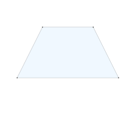
Blocks can be combined to define a complex geometry. To manipulate blocks, Amaru provides several operators as copy, move!, scale!, rotate, mirror, array, polar, extrude, etc.
For example, let's generate a square mesh with a central hole. We start with a quadratic quadrilateral block. Note that the vertex coordinates follow the same numbering as conventional finite elements. Thus, the corner nodes are listed first, and then the middle nodes. All the nodes are listed couterclockwise.
using Amaru
block1 = Block(
[
0.0 0.0
0.7643 0.7643
0.6667 1.0
0.0 1.0
0.38215 0.38215
0.692 0.8724
0.3333 1.0
0.0 0.5
],
cellshape=QUAD8, nx=5, ny=5
)
mplot(block1, "block1.svg", markers=true)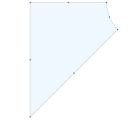
A mirror operation can be applyed to this block to get a second one. Then, both blocks can be grouped in an array for further manipulation.
block2 = mirror(block1, base=[0, 0], axis=[0.7643, -0.7643])
blocks = [block1, block2]
mplot(blocks, "blocks.svg", markers=true)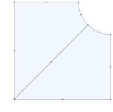
The center of the circle that contains the arc is located at the coordinates (1,1). To place the center at the origin (0,0) we perform a move! operation.
move!(blocks, dx=-1.0, dy=-1.0)
mplot(blocks, "moved.svg", markers=true, axis=true)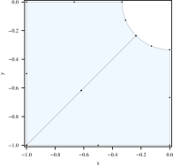
Next, we can apply a polar operation to the current geometry to obtain the square region with a central hole. Note that the original geometry was replicated four times (n=4) with different rotation angles. For this purpose a rotation axis and a base point were employed.
hole = polar(blocks, base=[0, 0], axis=[0, 0, 1], angle=360, n=4)
mplot(hole, "hole.svg", markers=true)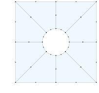
Then, an extrude operation is used to obtain a volume following a defined axis and length. The argument n=4 represents the number of divisions intended along the new dimension.
solid = extrude(hole, axis=[0, 0, 1], length=1, n=4)
mplot(solid, "solid.svg", markers=true, dist=13)
nothing # hide
Note that, the solid variable is an array with four blocks, as shown in the figure. This array is used to generate the structured mesh.
mesh = Mesh(solid)
mplot(mesh, "mesh.svg", dist=13)
nothing # hide
Finally, a smooth operation can be applied to improve the cells quality.
smooth_mesh = smooth!(mesh)
mplot(smooth_mesh, "smooth_mesh.svg", dist=13)
nothing # hide
Mesh generation examples
Below are presented some examples of structured mesh generation using Amaru.
Simple 2D mesh
using Amaru
block = Block([0 0 ; 2 2], nx=8, ny=6)
mesh = Mesh(block)
mplot(mesh, "mesh-quad4.svg", markers=true)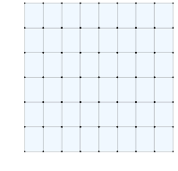
Mesh with quadratic cells
using Amaru
block = Block([0 0 ; 2 2], nx=8, ny=6, cellshape=QUAD8)
mesh = Mesh(block)
mplot(mesh, "mesh-quad8.svg", markers=true)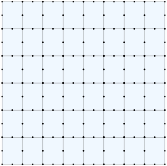
Simple 3D mesh
using Amaru
block = Block([0 0 0; 2 4 3], nx=3, ny=6, nz=6)
mesh = Mesh(block)
mplot(mesh, "mesh-hex8.svg", markers=true)/opt/hostedtoolcache/Python/3.9.9/x64/lib/python3.9/site-packages/matplotlib/colors.py:203: VisibleDeprecationWarning: Creating an ndarray from ragged nested sequences (which is a list-or-tuple of lists-or-tuples-or ndarrays with different lengths or shapes) is deprecated. If you meant to do this, you must specify 'dtype=object' when creating the ndarray.
c = np.array(c)2D mesh constructed from two quadratic blocks
using Amaru
block1 = Block(
[
0.0 0.0
0.7643 0.7643
0.6667 1.0
0.0 1.0
0.38215 0.38215
0.692 0.8724
0.3333 1.0
0.0 0.5
],
cellshape=QUAD8, nx=5, ny=5
)
block2 = mirror(block1, base=[0, 0], axis=[0.7643, -0.7643])
mesh = Mesh(block1, block2)
mplot(mesh, "mesh-2d.svg", markers=true)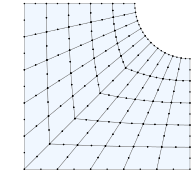
Mesh with cells growing in the $x$ direction
using Amaru
R = 5.0
r = 1.0
block = BlockGrid(
[ 0.0, r, R ],
[ 0.0, R ],
nx=[ 4, 8 ],
ny=[ 8 ],
rx=[ 1, 1.2] # elements growing rate in the x direction
)
mesh = Mesh(block)
mplot(mesh, "mesh-rate.svg", markers=true)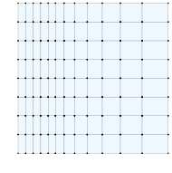
3D mesh obtained revolving the last example
mesh = revolve(mesh, minangle=0, maxangle=90)
changeaxes!(mesh, "xzy")
rotate!(mesh, axis=[0,0,1], angle=90)
mplot(mesh, "mesh-rev.svg", azim=-45)
changeaxes!: mesh associated data was not reordered according to new axes.Wire mesh
using Amaru
block1 = Block([0 0 0; 1 0 1; 0.7 0 0.3 ], n=7) # curved wire (quadratic)
block2 = Block([1 0 1; 1 0 2], n=5) # straight wire
mesh = Mesh(block1, block2)
mplot(mesh, "mesh-arc.svg", azim=-90, elev=0, markers=true)3D mesh obtained revolving the last example
mesh = revolve(mesh, n=24, axis=[0,0,1]) # surface by revolution
mplot(mesh, "mesh-surf.svg", elev=15)Finite element model
To performe a finite element analysis, an instance of the Domain type is required. This represents the domain model and contains nodes and finite elements. The element instances are different from the cells in a Mesh object since the elements are constructed according to the analysis problem. To instantiate a Domain object a mesh and a list of material models objects are needed. The Domain type is used for all analysis problems, e.g. mechanical, thermal, seepage, etc. Thus, for a particular problem, a consistent list of materials should be used. For example, in a mechanical analysis, all elements should be associated to mechanical material types. Based on the choosen materials, the Domain object will setup the corresponding finite elements and degrees of freedom.
Material definitions
There are several material models implemented in Amaru and are associated to a corresponding type, e.g. ElasticSolid, DruckerPrager, VonMises, ElasticRod, etc. A particular material instance is defined by calling the construcor with set of corresponding parameters.
using Amaru
steel = ElasticSolid(E=2e8, nu=0.2) # E in kPa
rock = DruckerPrager(E=2e8, nu=0.2, alpha=0.4, kappa=2500, H=1e4)
rebar = ElasticRod(E=2e8, A=1e-4)Model generation
The following example shows the walk through of creating a Domain object. Note that the list of materials contains a pair relating a domain region to material instance.
using Amaru
# Mesh generation
block = Block([0 0 0; 1 0.1 0.1], nx=20, ny=2, nz=2, cellshape=HEX20)
mesh = Mesh(block)
# Analysis model
steel = ElasticSolid(E=2e8, nu=0.2) # E in kPa
materials = [
:(x>=0) => steel,
]
model = Domain(mesh, materials)Boundary conditions
The boundary conditions are given by objects that define the quantities that should be applied to nodes, faces, edges or even elements (NodeBC, FaceBC, EdgeBC and ElementBC).
The example below shows a nodal boundary condition where all displacements are set to zero.
using Amaru
fixed_end = NodeBC(ux=0, uy=0, uz=0)NodeBC
conds: Base.Iterators.Pairs(:ux => 0, :uy => 0, :uz => 0)
filter: Expr ()
nodes: 0-element Vector{Node}This other example shows a face boudary condition where a traction is applied in the negative $z$ direction.
using Amaru
load = FaceBC(tz=-10)FaceBC
conds: Base.Iterators.Pairs(:tz => -10)
filter: Expr ()
faces: 0-element Vector{Cell}The keys (e.g. ux, tz, etc.) to be set in a boundary condition are related to the analysis problem, and ultimately to the material types in use. For example, in a mechanical analysis, the keys for nodal boundary conditions are ux, uy, uz, fx, fy and fz where ux represents displacement and fx concentrated force, both in the $x$ direction. Similarly, the keys for a face boudary condition are ux, uy, uz, tx, ty and tz, where tx is a traction (force per area) in the $x$ direction. Besides, the tn key can be used to apply traction normal to the face.
Analysis example
This example shows a mechanical analysis in a steel beam. The left end was clamped, thus all displacements at x==0 are set to zero. Also, a vertical traction is applied at the right end. The solve! function performs the calculations of a Domain instance subjected to a set of boundary conditions. The function also updates the state variables at the elements' integration points.
For post-processing in a visualization software (e.g. Paraview), the model can save the current per node and per element values (e.g. displacements, stresses, etc.) in "vtk" and "vtu" formats. To save the full state of a domain model, the output in "xml" format is also supported; thus, the model can be reused in future analyses.
using Amaru
# Mesh generation
block = Block([0 0 0; 1 0.1 0.1], nx=20, ny=2, nz=2, cellshape=HEX8)
mesh = Mesh(block)
# Analysis model
steel = ElasticSolid(E=200e6, nu=0.2) # E in kPa
materials = [
:(x>=0) => steel,
]
model = Domain(mesh, materials)
bcs = [
:(x==0) => NodeBC(ux=0, uy=0, uz=0)
:(x==1) => FaceBC(tz=-1000)
]
solve!(model, bcs, printlog=true, verbose=true)
save(model, "beam.vtu")Mechanical FE analysis: Stage 1
model type: 3d
unknown dofs: 540
stage 1 0:0:3.90 progress 0.00% increment 1 dT=1.0
assembling...
solving...
updating...
it 1 residue: 6.9579e-12
stage 1 0:0:5.04 progress 100.00%
valid increments: 1
time spent: 0h 0m 5.06s
file beam.vtu saved The mplot function allow to save a plot of the domain in several formats (e.g. "pdf", "svg", "png", etc.). In this case, the deformed state is plot using a mangnification scale of 100. Also the $u_y$ field is displayed and the corresponding label is placed next to the colorbar. To adjunst the point of view, the azim, elev and dist parameters can be set. They represent, respectively, the azimut, elevation angle and distance to the rendered domain.
mplot(model, "beam.svg", warpscale=100, field=:uz, colorbarlabel=raw"$u_z$", colorbarscale=0.4, azim=-90, elev=30, dist=7)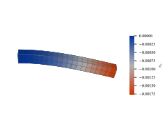
Nonlinear analysis
The use of material models with nonlinear behavior lead to a nonlinear analyses. For example, the VonMises material type represents a nonlinear material model. For the analysis, the number of increments can be adjusted using the nincs parameter. Also, the autoinc parameter can be set to true to le the solve! function to automatically compute and recompute the increment sizes. The tol paramter specifies the maximum force discrepancy between internal and external forces.
using Amaru
# Mesh generation
block = Block([0 0 0; 1 0.1 0.1], nx=20, ny=2, nz=3, cellshape=HEX8)
mesh = Mesh(block)
# Analysis model
steel1 = ElasticSolid(E=2e8, nu=0.2) # E in kPa
steel2 = VonMises(E=2e8, nu=0.2, fy=500e3, H=1e4)
materials = [
:(x>=0.5) => steel1,
:(x<=0.5) => steel2
]
model = Domain(mesh, materials)
bcs = [
:(x==0) => NodeBC(ux=0, uy=0, uz=0)
:(x==1) => FaceBC(uz=-0.04)
]
solve!(model, bcs, tol=0.01, autoinc=true)mplot(model, "beam-vm.svg", warpscale=10, field=:sxx, fieldmult=1e-3, colorbarlabel=raw"$\sigma_{xx}$", colorbarscale=0.4, azim=-90, dist=7)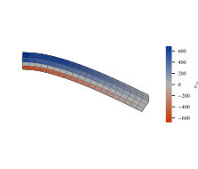
Loggers
Loggers are objects designed to track the information of nodes, integration points, faces, edges, points and segments. That information is updated at every increment and can be saved to a file.
using Amaru
nodelog = NodeLogger("nodelog.table")
iplog = IpLogger("nodelog.table")
facelog = FacesSumLogger("nodelog.table")
nodeslog = NodeGroupLogger("nodes.book")The loggers need to be associated to the entity they track by using a filter expression, coordinates or a tag string. Finally, the loggers have to be linked to a Domain object by using the setloggers! function.
using Amaru
# Mesh generation
block = Block([0 0 0; 1 0.1 0.1], nx=20, ny=2, nz=3, cellshape=HEX8)
mesh = Mesh(block)
# Analysis model
steel1 = ElasticSolid(E=2e8, nu=0.2) # E in kPa
steel2 = VonMises(E=2e8, nu=0.2, fy=500e3, H=1e4)
materials = [
:(x>=0.5) => steel1,
:(x<=0.5) => steel2
]
model = Domain(mesh, materials)
bcs = [
:(x==0) => NodeBC(ux=0, uy=0, uz=0)
:(x==1) => FaceBC(uz=-0.04)
]
loggers = [
:(x==1) => FacesSumLogger("tip.table"),
[0.05, 0.05, 0.1] => IpLogger("ip.table"),
:(y==0.1 && z==0.1) => NodeGroupLogger("topgroup.book"),
[0 0.05 0.1; 1 0.05 0.1] => SegmentLogger("top.book", n=40),
[0 0.05 0.0; 1 0.05 0.0] => SegmentLogger("bottom.book", n=40),
]
setloggers!(model, loggers)
solve!(model, bcs, tol=0.01, nouts=2, autoinc=true)
setup_logger: No ip found at [0.05, 0.05, 0.1]. Picking the nearest at
[0.039434, 0.039434, 0.092956]
nincs changed to 2 to match nouts
file ./top.book written
file ./bottom.book written
file ./top.book written
file ./bottom.book written
file ./top.book written
file ./bottom.book writtenThe loggers are classified single loggers and group loggers. Single loggers record a table of data. Group loggers record a book, which is a set of tables. Once the analysis is finished, the loggers data can be recovered in another script calling the constructors of the types DataTable and DataBook.
using Amaru
tip = DataTable("tip.table")
│ ux │ uy │ uz │ fx │ fy │ fz │
│ 0.0e+00 │ 0.0e+00 │ 0.0 │ 0.0e+00 │ 0.0e+00 │ 0.0 │
│ 8.7e-19 │ 5.5e-16 │ -0.0004 │ -1.4e-13 │ 4.2e-13 │ -2.22233 │
│ 1.5e-18 │ 6.9e-16 │ -0.0012 │ -6.0e-13 │ 9.7e-13 │ -6.667 │
│ 3.2e-18 │ 1.9e-15 │ -0.0028 │ -1.2e-13 │ 1.9e-12 │ -15.5563 │
│ 3.6e-18 │ 3.3e-15 │ -0.006 │ -2.1e-12 │ 2.4e-12 │ -33.335 │
│ 8.8e-18 │ 8.9e-15 │ -0.0124 │ 5.8e-12 │ 6.2e-12 │ -68.8924 │
│ 1.6e-17 │ 9.9e-15 │ -0.02 │ -6.4e-12 │ 6.4e-12 │ -111.117 │
│ -9.0e-21 │ -1.1e-18 │ -0.02128 │ -1.7e-13 │ -3.0e-15 │ -117.705 │
│ 0.0e+00 │ -1.2e-18 │ -0.02256 │ -1.6e-13 │ 2.3e-14 │ -123.056 │
│ -9.0e-21 │ -1.0e-18 │ -0.02384 │ -3.2e-14 │ 2.1e-14 │ -127.697 │
│ 1.8e-20 │ -1.1e-18 │ -0.02512 │ -1.7e-13 │ 1.8e-14 │ -132.014 │
│ 9.0e-21 │ -1.0e-18 │ -0.0264 │ -5.3e-13 │ -1.9e-14 │ -136.176 │
│ 0.0e+00 │ -1.2e-18 │ -0.02768 │ 1.1e-13 │ -1.1e-14 │ -139.91 │
│ 3.6e-20 │ -1.2e-18 │ -0.02896 │ 1.9e-13 │ 6.3e-15 │ -143.012 │
│ 1.8e-20 │ -1.6e-18 │ -0.03024 │ -3.6e-14 │ 1.7e-14 │ -145.629 │
│ 5.4e-20 │ -6.9e-19 │ -0.03152 │ -8.8e-13 │ -2.9e-14 │ -147.749 │
│ 5.4e-20 │ -1.1e-18 │ -0.0328 │ 7.2e-15 │ -5.9e-15 │ -149.645 │
│ 2.7e-20 │ -1.0e-18 │ -0.03408 │ -2.1e-13 │ 3.0e-15 │ -151.396 │
│ 2.7e-20 │ -9.3e-19 │ -0.03536 │ -1.5e-12 │ -5.1e-15 │ -152.984 │
│ 2.7e-20 │ -5.7e-19 │ -0.03664 │ 2.0e-13 │ 1.8e-14 │ -154.516 │
│ 1.8e-20 │ -1.1e-18 │ -0.03792 │ -3.7e-13 │ -2.4e-14 │ -155.89 │
│ 9.0e-21 │ -4.5e-19 │ -0.0392 │ -1.9e-13 │ 1.4e-14 │ -157.181 │
│ 9.0e-21 │ 1.7e-17 │ -0.04 │ 1.8e-13 │ -3.0e-14 │ -157.973 │ using Amaru
long = DataBook("topgroup.book").tables[end]
│ x │ y │ z │ ux │ fx │ uy │ fy │ uz │ fz │
│ 0.0 │ 0.1 │ 0.1 │ 0.0e+00 │ -3.2e+02 │ 0.0e+00 │ 1.1e+02 │ 0.0e+00 │ 1.1e+02 │
│ 0.05 │ 0.1 │ 0.1 │ 3.3e-04 │ 2.0e-03 │ -1.4e-04 │ 2.5e-03 │ -1.9e-04 │ 4.6e-04 │
│ 0.1 │ 0.1 │ 0.1 │ 7.3e-04 │ 1.3e-03 │ -1.5e-04 │ 4.8e-03 │ -7.1e-04 │ 1.1e-03 │
│ 0.15 │ 0.1 │ 0.1 │ 1.1e-03 │ -4.8e-04 │ -1.1e-04 │ 3.1e-03 │ -1.6e-03 │ 1.3e-03 │
│ 0.2 │ 0.1 │ 0.1 │ 1.3e-03 │ -5.5e-04 │ -6.6e-05 │ 4.2e-04 │ -2.9e-03 │ -7.8e-06 │
│ 0.25 │ 0.1 │ 0.1 │ 1.6e-03 │ -8.0e-05 │ -4.5e-05 │ 5.1e-05 │ -4.3e-03 │ -8.3e-05 │
│ 0.3 │ 0.1 │ 0.1 │ 1.7e-03 │ -2.6e-06 │ -3.2e-05 │ 1.1e-05 │ -6.0e-03 │ -7.8e-06 │
│ 0.35 │ 0.1 │ 0.1 │ 1.9e-03 │ -5.2e-08 │ -2.5e-05 │ 6.3e-07 │ -7.8e-03 │ -1.6e-07 │
│ 0.4 │ 0.1 │ 0.1 │ 2.0e-03 │ -1.1e-14 │ -2.4e-05 │ 2.0e-15 │ -9.7e-03 │ -6.3e-14 │
│ 0.45 │ 0.1 │ 0.1 │ 2.1e-03 │ -1.4e-14 │ -2.2e-05 │ 2.6e-14 │ -1.2e-02 │ 1.4e-13 │
│ 0.5 │ 0.1 │ 0.1 │ 2.2e-03 │ 5.3e-14 │ -2.0e-05 │ -3.3e-14 │ -1.4e-02 │ -2.6e-13 │
│ 0.55 │ 0.1 │ 0.1 │ 2.3e-03 │ -6.2e-14 │ -1.8e-05 │ -2.3e-14 │ -1.6e-02 │ -1.6e-13 │
│ 0.6 │ 0.1 │ 0.1 │ 2.4e-03 │ 1.7e-14 │ -1.6e-05 │ 2.6e-15 │ -1.9e-02 │ -5.4e-14 │
│ 0.65 │ 0.1 │ 0.1 │ 2.5e-03 │ -3.7e-14 │ -1.4e-05 │ -1.4e-13 │ -2.1e-02 │ -4.6e-13 │
│ 0.7 │ 0.1 │ 0.1 │ 2.6e-03 │ -5.5e-14 │ -1.2e-05 │ -1.7e-14 │ -2.4e-02 │ -5.5e-14 │
│ 0.75 │ 0.1 │ 0.1 │ 2.6e-03 │ 4.4e-14 │ -9.8e-06 │ -1.0e-13 │ -2.6e-02 │ 3.1e-14 │
│ 0.8 │ 0.1 │ 0.1 │ 2.7e-03 │ -3.3e-14 │ -7.9e-06 │ -8.1e-14 │ -2.9e-02 │ -3.3e-14 │
│ 0.85 │ 0.1 │ 0.1 │ 2.7e-03 │ -6.0e-14 │ -5.9e-06 │ -1.3e-13 │ -3.2e-02 │ -2.0e-13 │
│ 0.9 │ 0.1 │ 0.1 │ 2.7e-03 │ -1.1e-13 │ -3.9e-06 │ -1.2e-13 │ -3.4e-02 │ 2.9e-13 │
│ 0.95 │ 0.1 │ 0.1 │ 2.8e-03 │ -6.4e-14 │ -1.9e-06 │ -2.8e-14 │ -3.7e-02 │ 2.2e-13 │
│ 1.0 │ 0.1 │ 0.1 │ 2.8e-03 │ 3.5e-14 │ -7.0e-07 │ 6.2e-14 │ -4.0e-02 │ -4.8e+00 │ Plotting
Amaru provides a chart ploting function cplot to ease the visualization of the data stored in DataTable and DataBook objects.
using Amaru
tip = DataTable("tip.table")
cplot(
[
(x=tip.uz, y=tip.fz, marker="o"),
],
filename = "uz_vs_fz.svg",
xmult = 1e3,
xlabel = raw"$u_z$ [mm]",
ylabel = raw"$f_z$ [kN]",
)
topgroup = DataBook("topgroup.book").tables[end]
cplot(
[
(x=topgroup.x, y=topgroup.uz, marker="o"),
],
filename = "x_vs_uz.svg",
ymult = 1e3,
xlabel = raw"$x$ [m]",
ylabel = raw"$u_z$ [mm]",
)
top = DataBook("top.book").tables[end]
bottom = DataBook("bottom.book").tables[end]
cplot(
[
(x=top.x, y=top.sxx, marker="o", label="top"),
(x=bottom.x, y=bottom.sxx, marker="o", label="bottom"),
],
filename = "x_vs_sxx.svg",
ymult = 1e-3,
xlabel = raw"$x$ [m]",
ylabel = raw"$\sigma_{xx}$ [MPa]",
)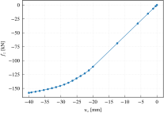
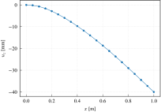
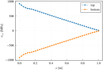